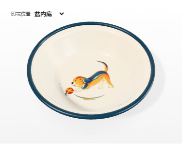
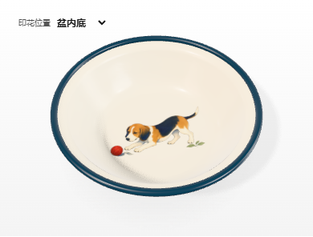
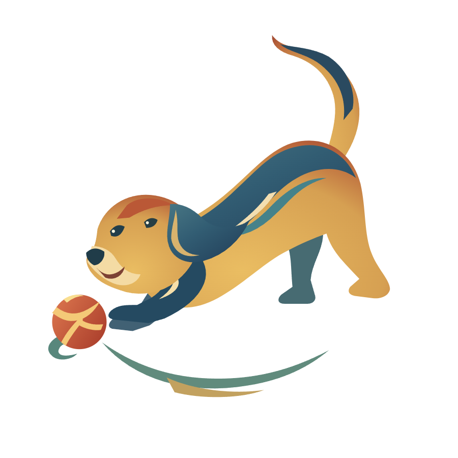
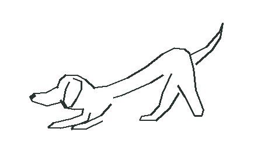

小犬逐球
保留长垂耳与前低后高的扑玩动作。把一枚朱红小球放在鼻尖与前爪的视线交点，给它一个追逐的对象。




看两份构图输入




两条路径分别给模型一次图像输入，重新绘制一幅平面装饰画。构图稿和文字要求都不同，本次用于比较设计方向。
这件实物给了我们什么线索
八象牌鸳鸯搪瓷脸盆（国立台湾历史博物馆，2017.004.0001）将两只互相呼应的鸟和下方水纹组织成一小幅盆心画，红沿独立分区。这里取的是“动物、动作对象、器面空间”的关系。犬、球和绸带是本次的当代设计。看原物正面与编目
造型取舍：左稿的蓝背和尾弧在小尺寸下容易认，但腿部较硬；右稿的低头伸爪更传神，毛色退晕在杯身小图上容易合并。两份均为原创数字试样，不能由此认定为中华珐琅厂的历史犬纹。